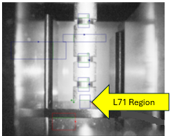
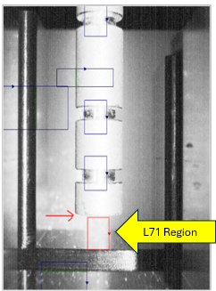
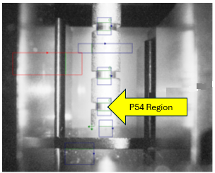
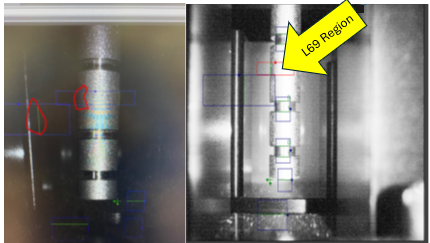
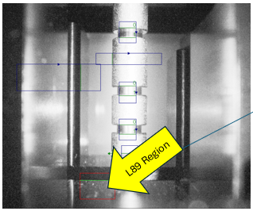
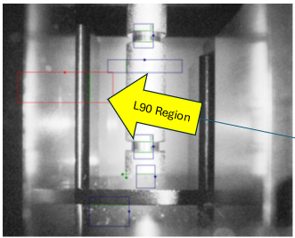
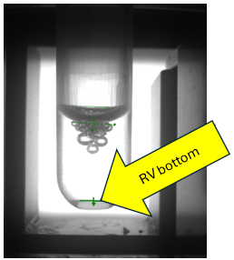

Calibrating the Wash Wheel Dispense Volume Camera Setting
Prepare the Instrument for Camera Calibrations
- Be sure there is enough substrate, wash buffer, and reaction vessels in the instrument to prime the instrument and to complete the desired calibrations.
- Initialize the instrument. See Initializing the Instrument for more information.
- Prime the instrument. See
Priming the Instrument for more information.
Note: Initialization and priming may take several minutes.
- In the Console App select the SYSTEM RUNNING button and go to to enter the instrument into a YELLOW (Paused) status.
Calibrating the Wash Wheel Dispense Volume Camera Setting
- Press the Windows key and go to to open the In-Sight Explorer application.
- In the In-Sight Explorer application go to to open the In-Sight Network pane.
- In the In-Sight Network pane, right-click the wash wheel camera and select Show Spreadsheet View.
- Be sure the instrument is in a YELLOW (Paused) status.
- In the Console App go to to open the Intrusive Diagnostics page.
- In the Console App on the Intrusive Diagnostics page select Start Session to enter the instrument into a BLUE (Maintenance) status.
- Select Camera Calibration to open the Camera Calibration page.
- In the Camera Function column select the Wash Wheel Dispense Volume checkbox.
- Clear any other checkboxes.
- In In-sight Explorer, on the menu bar select Record to record the session in case of a failure.
- In the Console App on the Camera Calibration page select
Start Camera Calibration.
- If the camera setting passes calibration, the Last Calibration column will display Today and the Result column will display Pass, and the Status pane will display the notification Operation completed: Camera Calibration.
- If the calibration fails, you must adjust the camera.
Note: Wash wheel dispense volume calibration is a two-step process.
- The system attempts to detect the wash wheel camera calibration tool. If the system fails to detect the tool, see Adjusting the Camera to Detect the Wash Wheel Calibration Tool for more information.
- The system attempts to verify the dispense volume. If the system fails to verify the dispense volume, see Adjusting the Camera to Verify Dispense Volume for more information.
- Go to the Intrusive Diagnostics page and select End Session.
- In In-Sight Explorer clear the Record button to stop recording.
Adjusting the Camera to Detect the Wash Wheel Calibration Tool
Perform the following procedures using In-Sight Explorer to adjust the camera to detect the wash wheel calibration tool.
| Adjusting the Region for Cell L71 to Detect the Bottom Edge of the Calibration Tool |
|---|
|
The region for L71 should detect the bottom edge of the calibration tool. 
|
| Adjusting the Region for Cell L71 to Cover the Bottom of the Calibration Tool |
|---|
|
The region for cell L71 should cover the bottom of the calibration tool. 
|
| Adjusting the Region for Cell P54 to Cover the First Cutout Edge of the Calibration Tool |
|---|
|
The region for cell P54 should cover the first cutout edge of the calibration tool. 
|
| Adjusting the Region for Cell L69 to Detect the Left Side of the Calibration Tool |
|---|
|
The region for cell L69 should detect the left side of the calibration tool. 
|
| Adjusting the Region for Cell L89 to Detect the Horizontal Reference |
|---|
|
The region for cell L89 should detect the horizontal reference, which is the bottom edge of the wash wheel plate. 
|
| Adjusting the Region for Cell L90 to Detect the Vertical Reference |
|---|
|
The region for cell L90 should detect the vertical reference, which is the wall of the wash wheel. 
|
Adjusting the Camera to Verify Dispense Volume
Perform the following procedures using In-Sight Explorer to adjust the camera to verify dispense volume.
| Adjusting the Region for Cell L71 to Detect the Bottom of the Reaction Vessel |
|---|
|
The region for cell L71 should detect the bottom of the reaction vessel (RV). 
|